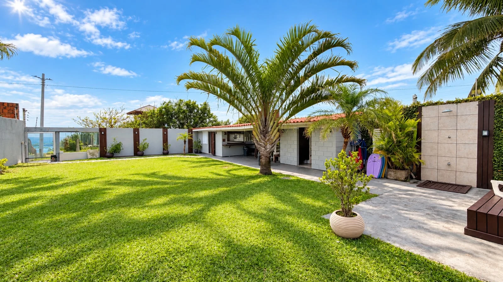

Suíte
Suíte Joaquina
Uma suíte acolhedora para descansar depois de um dia na praia.
Conhecer acomodação ↗ Ingleses BeachPOUSADA · FLORIANÓPOLIS
Ingleses BeachPOUSADA · FLORIANÓPOLISSeu próximo capítulo tem sol, mar e dias mais leves.
Encontre sua acomodação ↗Atendimento direto pelo WhatsApp. Valores e disponibilidade sob consulta.
Em Ingleses Norte, sua pausa tem acesso direto à praia e espaços para aproveitar cada momento. Da viagem em família aos dias a dois, encontre seu lugar na ilha.
Conhecer os quartos ↗
Uma suíte acolhedora para descansar depois de um dia na praia.
Conhecer acomodação ↗
Dois quartos, sendo uma suíte, com sala e cozinha para aproveitar a estadia em família.
Conhecer acomodação ↗
Ambientes para descansar, cozinha e uma varanda para aproveitar a brisa do mar.
Conhecer acomodação ↗
Cama de casal e de solteiro, cozinha compacta e um cantinho para suas refeições.
Conhecer acomodação ↗
Dias a dois com jacuzzi em área envidraçada e vista para o mar.
Conhecer acomodação ↗R. das Gaivotas, 650 — Ingleses Norte
Florianópolis — SC · CEP 88058-500

Um aniversário, um encontro em família ou a confraternização da equipe. Conheça o espaço para seu próximo evento.
Conhecer o espaço ↗